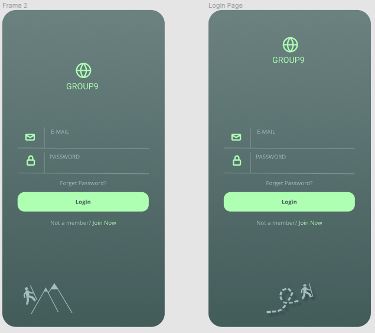

Hiking Application
This application was my second Android Mobile application. For this project, I was in charge of the complete front-end and became the
Scrum master for our Agile project after the second cycle. This project demonstrated the importance of communication in a group project.
There were constant meetings where I would be the only person in attendence. A co-team lead in the first cycle started out strong sending emails and
setting up a Discord serve but after that fell short. One of the toughest parts was gathering the group to discuss the scope of the project.
As I produced a design for the app using Figma, I recieved no feedback from the group as to the ability to complete the aspects I planned to insert
on the front-end. I recieved great feedback from the client on my work as I progressed. As the communication stayed subpart I took on my front-end part
with a full head of steam. This in the end was significant to meeting the deadline of the project. During this I had to pick up the slack of the
back-end developers and coded some back-end to accomidate my work such as the login screens password qualification error message. The lack of work
contributed from the other parties ended up not allow this app to reach its full potential especially on the database side. These were some of the
problems that this project made me aware of for future group endeavors.
A link to the GitHub of this project with files, apk, and a video demonstration can be found here:
Hiking Application
Login Page
To start, I wanted to have a design that would be simple for the users and developers. I played around with a few color schemes and ended on a green
variety to associtate with the environment for the user to easily identify. I designed the login screen to start to try and get a design and layout
for the application's scope. I wanted a recongnizable logo so I went with a simple globe logo and the name of my team which was Group9.
The next step was to fill in a login design inspired by other designers with having a logo and a less vibrant word of the task need to be completed
by the user. The design choice of having a vibrant "Login" button easy for the members who had previously signed up for the app while having options to
become a memebr and "Join Now".
A "Forgot Password" button because everyone has forgotten a password in one instance or another so this is a must in designs. At the bottom of this screen
I combined a few svg images to create an image of a man hiking, relating to the application's scope and to fill the white space. I played around and tried to
create other options like with the man on the mountain but the vectors would not line up in a way that I was pleased with so I pushed for the no mountains design.

Home Screen
The next screen I started to design was the home page. With that I wanted to implement a "Welcome userName" screen that would allow processing time
for the app to locate the members information and data or log new memeber data. This page would not be implemented in the final product.
Through this transition there would ideally be an animation of the userName sliding up into the position of the Group9 location as seen in the image below.
This feature would also have to be sacraficed due to the problems face within the cycles of the project. I started to try and play aroun with ideas that would
contain the feature that the team agreed upon which were: Downloaded maps, Calendar, Weather Forecast, Gear Lists, and Emergency Contact.

I tried to grasp my inital concept but after some thought, decided to scratch it and move onto a different layout. Taking a step back relized that having buttons that
could navigate different pages that hosted the desired feautures would be easy on developers and the user. For the home page, all other features could be displayed in a
brief shortcut that could be turned into a clickable object that would take you to the page of that content. Once I got the layout that I was pleased with I shared it with
the team, which they were also pleased yet gave no criticism which left me on my own to improve many of the features. The images below display the draft concepts
that would become the final application with some tweaking of minimal aspects in the Android Studio coding development stage that I would perform to host the front-end.
Map Page
This page would require the most collaboration on understanding the final intended product. Since the communication was little to none by the group, I created
a searching feature, a manage maps feature, and an altitude tracker. Which were aspects deemed useful as a collective in the backlog I created that never got editted by my colleagues.
To accompany this page there would need to be a scroll feautre or other pages to store these features more in depth. The additional pages I designed can be seen below. This contains
options I presented that could function as these additional pages. The first shown is a map selection page that would allow the user to click/swipe via the arrows to select the desired
region. From here, available maps of trails would appear that they could click on and ge shown in more detail. This concept was not used as being to difficult to get into production. I
designed two concepts of this however, because my original did not show the selected area as a vibrant color for being highlighted. I switched them because the brighter color stands out
more for the user to follow their selection easier. As you can see, the frames 8-11 (on the right) have the highlighted region in the vibrant green color.

Weather Page
I designed this page to display the weekly forcast in the top portion of the screen. When looking to plan a hiking trip, weather is a major factor. I wanted to give significance to the current day which is highlighted in the vibrant green color. Below the days, there was intended to be a grab of data from a weather outlet however the back-end and database teams did not do their job of linking this aspectt. Underneath this weekly forcast feature, there are would be a clickable link that would take you to articles, tutorial, equipment, etc that would aid in a survival situation. Accompanying the weather and tips there was a desired area that would take you directly to your local news website giving you a better understanding of the forcast.
Information Page
This page is intended to display more articles and important information realted to hiking. This would also contain information about recommended gear, more safety tips, and other important information at the time. This could range from defective saftey equipment to new achievements accomplished in the related field of hiking.
Settings Page
If you click on the link to get more details on the project, you will find a video on the project as the final product by the other mememebrs in the team.
Due to the database team not getting any significant work done, I created a last second page to replace the weather page. There were no implementations made to gather outside date or member
data by that group. This changed the design of the settings button being a drop down i nthe top left corner to being a quick clickable text Save and Cancel screen for users.